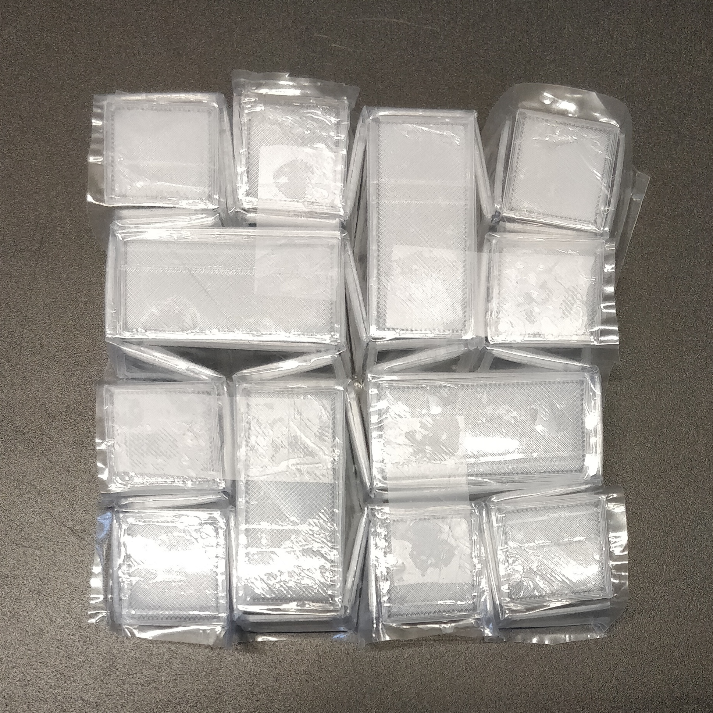
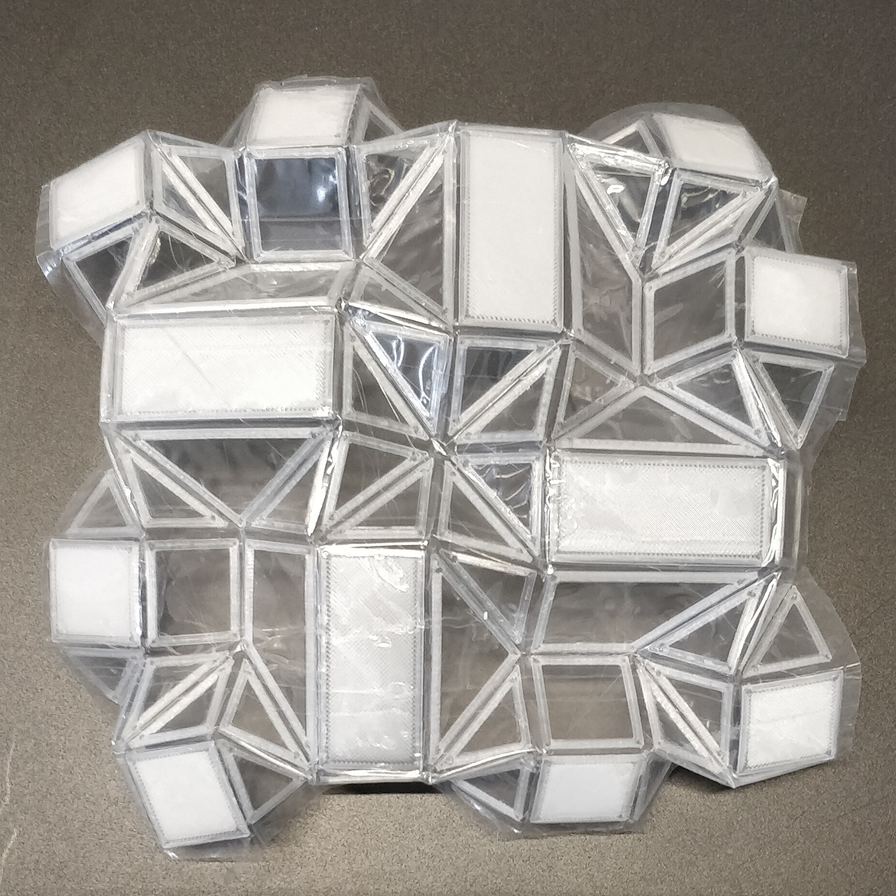

Imagining a future in which there are omnidirectional vehciles that are also autonomous along with human
controlled vehicles and other road users. Communicating the intention of a vehicle will be an important
development of these future vehciles. During project 3 the idea was explored to use origami to change the shape
of the lighting fixtures but also other parts of the car to indicate direction.
via GIPHY